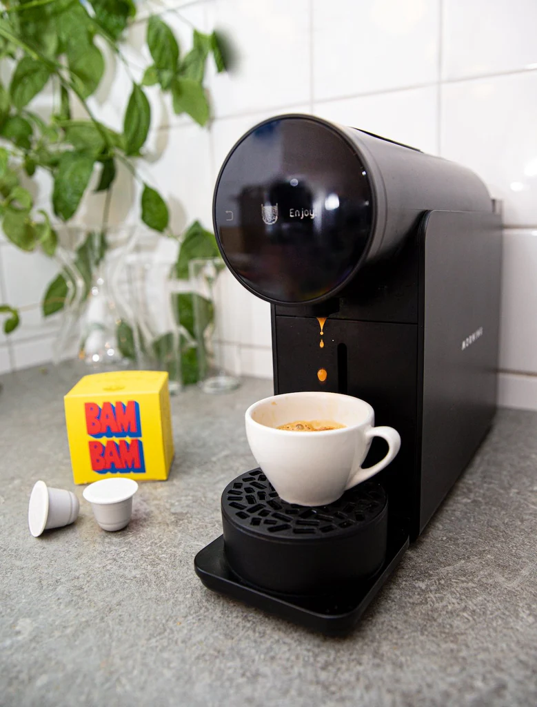

| # | Information | Modell | Bild | Pris |
|---|---|---|---|---|
| 1 | Om du och ditt team är den sorten som fortfarande kommer att göra en daglig pilgrimsfärd till caféet runt hörnet även när det finns en kaffemaskin bara några meter från ditt skrivbord, för "det smakar bara bättre", det här är valet för dig. Espressomaskiner är samma som används på de flesta kaféer, så du hittar dem gör även kaffe av barista – om du har en högkvalitativ espresso och kunskap om hur man använder en mjölkskummare att matcha. Det är en kaffemaskin som garanterat levererar varje gång, inte bara i kvalitet utan också i tacksamhet rom dina kollegor för pengarna som sparas på alla dessa dyra kaffekörningar. | Espresso Machine | 5990kr | |
| 2 | För arbetsplatser som involverar rutiner eller evenemang med stora grupper som anländer på en gång, säkerställer en bulkbryggningsmaskin att alla får en varm, kvalitetskopp pronto. Dessa filterkaffemaskiner med hög kapacitet fungerar via en pump och kan ställas in före möten eller företagsevent för självbetjäning. Perfekt för konferenser och möten, med inställda start- och paustider, en filterkaffemaskin kan möta höga volymkrav och förse alla med sin morgonfix på några sekunder. | Filter Coffee Machine | 5990kr | |
| 3 | Kapselkaffemaskiner erbjuder en mer personlig och estetisk kaffedricksupplevelse. Med ett brett utbud av kaffekapslar som erbjuder variation i arom, smak och intensitet, kan anställda välja vad de än känner för tillfället, sedan välja önskad styrka och förhållande mellan vatten och mjölk och lämna resten till maskinen. Ofta med en mer elegant design än traditionella skrymmande modeller, kan en kapselkaffemaskin vara det perfekta komplementet till en modern, minimalistisk arbetsyta. | Capsule Coffee Machine |  | 5990kr |
| 4 | Kaffebönor går in längst upp, kaffe kommer ut längst ner (eller varm choklad om du är sugen på det). Den här typen av kaffemaskin gör allt arbete åt dig – allt som krävs är att välja ett av de anpassningsbara alternativen och vänta på att maskinen ska göra sin magi. Kaffeautomater använder mjölkpulver för att passa sin modell med lågt underhåll (som Bianchi Maestro Bean To Cup). De är vanligtvis också mer bärbara än andra större automatiska maskiner, vilket gör dem idealiska för en arbetsplats som ibland byter bas. Den minimala och kompakta designen hos moderna kaffeautomater (som Bianchi Maestro Rapido) gör dem till en lämplig kaffemaskinstyp för små och medelstora företag. Dessutom finns vårt utbud av kaffeautomater även tillgängligt med färsk mjölk med kaffemaskinsmodeller (som DelattI F12, Apollo 11 och Mytho Excel). | Coffee Vending Machine | 5990kr | |
| 5 | Droppkaffebryggare fungerar genom att värma upp vatten som droppar på kaffesumpen nedanför. Det är som en tung version av en fransk press (men scrolla ner om du också behöver informationen om den modellen). Droppfilter kan producera en sats som är tillräckligt stor för att fylla flera muggar på en gång på inte mer än några minuter, och är som sådana mer lämpade för mindre arbetsplatser som är mer benägna att ha kaffepauser samtidigt. | Drip Filter Coffee Machine | 5990kr | |
| 6 | Det här är den du har sett i romantiska filmer från 1950-talet och representeras som en avgjort mer chic, europeisk stil att dricka kaffe. En fransk press, även kallad cafetiere eller kaffekolv, är ett metall- eller glaskärl, där kaffesump ösas in och varmt vatten hälls över toppen. Efter några minuters bryggning trycks ett inre filter ner som separerar malningarna för att skapa en rik, djärv smak. Denna speciella manuella kaffemaskin kan vara lite krånglig att använda till en början, men när du väl har fått kläm på den kommer du att vara den mest estetiska kaffedrickaren på kontoret. | French Press | 5990kr |
Information för företag om våra kaffepartytjänster.
Information för privatpersoner om våra kaffepartytjänster.